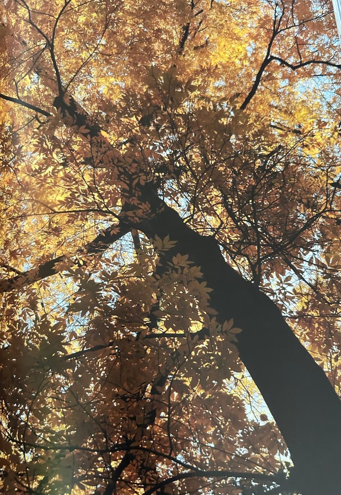
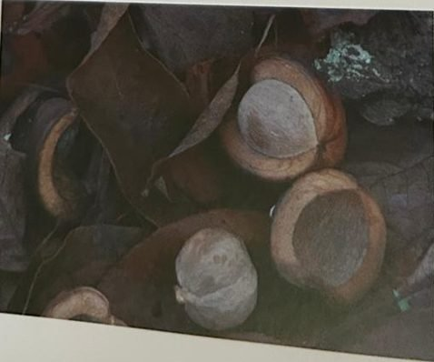

Groepen › Nieuwe Wereld
14. West-Pennsylvania, Allegheny plateau

Het Alleghenyplateau in de staten Pennsylvania en New York is een uitloper van het Appalachengebergte en de loofbossen vertonen er kenmerken van de zeer soortenrijke bossen die we verder op de hellingen van het Appalachengebergte (arboretumgroep 15) zullen terugvinden. Diverse eiken- en esdoornsoorten komen hier voor in menging met linden, notelaren, essen en de Amerikaans beuk die van de Europese verschilt door zijn grotere, duidelijker getande blad. De Amerikanen onderscheiden witte eiken met afgeronde bladlobben, bv Witte eik en Tweekleurige eik, van rode eiken met gepunte lobben, waaronder de ingevoerde Amerikaanse eik en de Moeraseik ook bij ons wel bekend zijn. Rode esdoorn, Zilveresdoorn en Suikeresdoorn zijn de dominante esdoornsoorten; de kleinere Amerikaanse slangenesdoorn met zijn typische bast en de Vederesdoorn met zijn uitzonderlijke samengestelde blad zijn soorten van de onderetage, net als de Amerikaanse hopbeuk en de Amerikaanse hazelaar. Pioniersoorten zijn onder meer de Amerikaanse populier en de Amerikaanse ratelpopulier, de Gele berk en de Suikerberk. Een buitenbeentje is de Doodsbeenderenboom, met zijn grote dubbel geveerde bladeren in de zomer en zijn knokige uitzicht tijdens de winter.
Uit het boek
1,44 ha · 42 soorten · 639 bomen
- Model is het Allegheny National Forest: drie bostypes komen er samen.
- De grootbladhickory heeft samengestelde bladeren van meer dan 60 cm.


Bron: Geografisch Arboretum Tervuren. Een wereldreis rond bomen (2020), p. 150 en volgende.
Deelgroepen
- 14 – West-Pennsylvanië
Soorten in deze groep (43)
- Tsuga canadensisOost-Amerikaanse hemlockspar · 165 bomen
- Populus tremuloidesAmerikaanse ratelpopulier · 64 bomen
- Populus deltoidesAmerikaanse populier · 52 bomen
- Acer saccharumSuikeresdoorn · 40 bomen
- Acer negundoVederesdoorn · 37 bomen
- Betula alleghaniensisGele berk · 36 bomen
- Juglans cinereaGrijze walnoot · 26 bomen
- Carya ovataRuigschorshickory · 24 bomen
- Fraxinus americanaWitte es · 21 bomen
- Aesculus glabraKale paardekastanje · 19 bomen
- Quercus rubraAmerikaanse eik · 19 bomen
- Castanea dentataAmerikaanse kastanje · 13 bomen
- Pinus strobusWeymouthden · 12 bomen
- Prunus virginianaVirginische vogelkers · 12 bomen
- Platanus occidentalisWesterse plataan · 10 bomen
- Gymnocladus dioicaDoodsbeenderenboom · 8 bomen
- Carya laciniosaGrootbladhickory · 7 bomen
- Juglans nigraZwarte walnoot · 6 bomen
- Magnolia acuminataKomkommermagnolia · 6 bomen
- Cercis canadensisOost-Amerikaanse judasboom · 5 bomen
- Crataegus fecunda5 bomen
- Crataegus holmesiana5 bomen
- Crataegus pedicellata5 bomen
- Prunus serotinaAmerikaanse vogelkers · 5 bomen
- Acer pensylvanicumAmerikaanse slangenesdoorn · 4 bomen
- Tilia americanaAmerikaanse linde · 4 bomen
- Celtis occidentalisAmerikaanse netelboom · 3 bomen
- Crataegus anomala3 bomen
- Fagus grandifoliaGrootbladige beuk · 3 bomen
- Picea rubensRode spar · 3 bomen
- Quercus species3 bomen
- Carpinus carolinianaAmerikaanse haagbeuk · 2 bomen
- Crataegus pensylvanicum2 bomen
- Ostrya virginianaAmerikaanse hopbeuk · 2 bomen
- Acer rubrumRode esdoorn · 1 boom
- Acer rufinerveRossige slangenesdoorn · 1 boom
- Acer spicatumAaresdoorn · 1 boom
- Amelanchier canadensisCanadees krentenboompje · 1 boom
- Chionanthus virginicusAmerikaanse sneeuwvlokkenboom · 1 boom
- Physocarpus opulifoliusGewone blaasjesvrucht · 1 boom
- Quercus palustrisMoeraseik · 1 boom
- Quercus velutinaVerfeik · 1 boom
- Rhus typhinaAzijnboom · 1 boom
Tekst en foto: arboretum-tervuren.be (Koninklijke Schenking), met toestemming gebruikt.